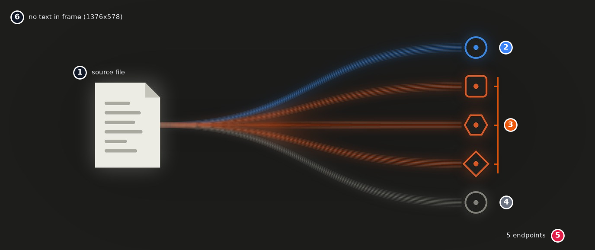
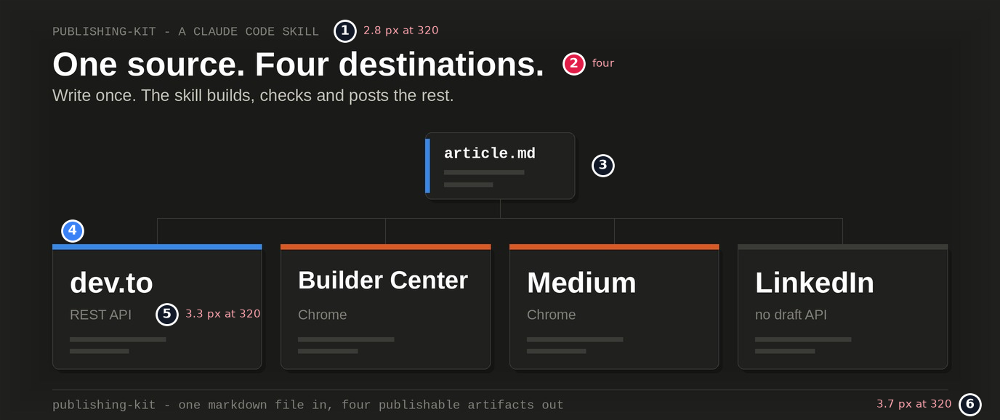
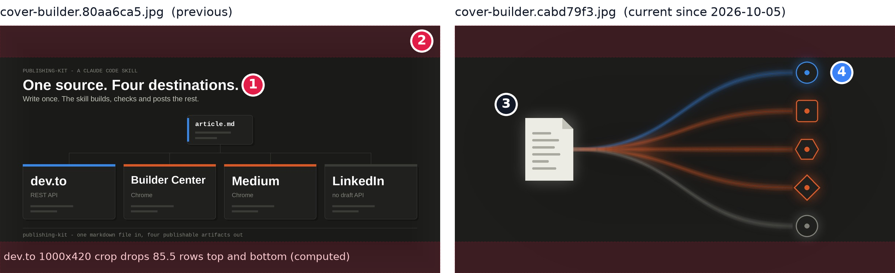
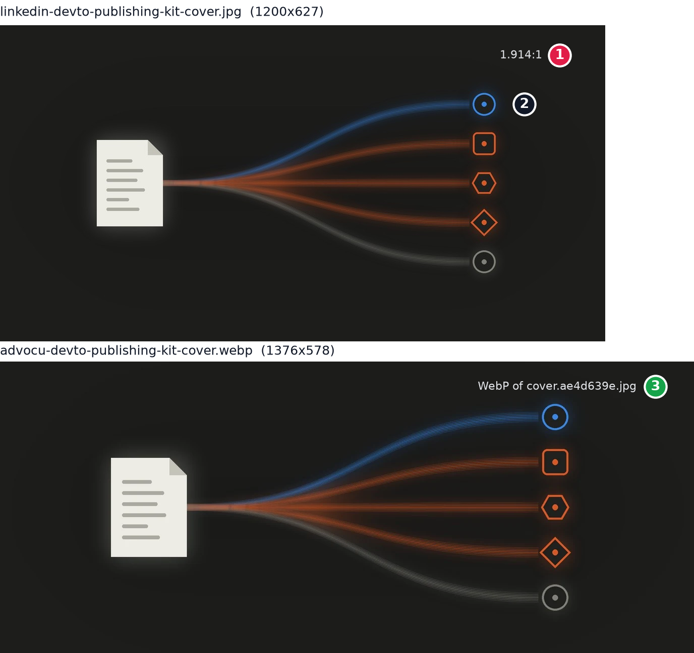
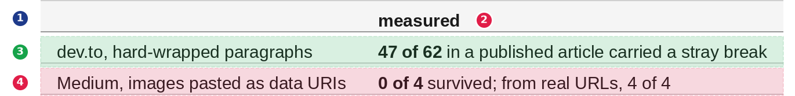

Streamline Publishing with a Claude Code Skill (dev.to article, paper/devto-publishing-kit.md, front matter published: false). The article's figures are its cover in five files and one table rendered to PNG. Each is decoded badge by badge, and every claim the article makes about a figure is checked against the image and the files in paper/evidence/.
scripts/measure_figures.py (output in work/measure_figures.out).CLAIMS.md or an evidence file, cited by file and line.| File | Pixels | Ratio | Bytes | sha256[:8] = name? | Where it is used |
|---|---|---|---|---|---|
cover.ae4d639e.jpg | 1376x578 | 2.3806 | 44,650 | yes | dev.to cover_image (article line 6); Medium hosted HTML line 191 |
cover.77acc7c4.jpg | 1376x578 | 2.3806 | 73,455 | yes | previous dev.to cover; in the article's quoted check-links output (lines 116-117); Medium story per cover-refresh.txt |
cover-builder.cabd79f3.jpg | 1200x675 | 1.7778 | 41,487 | yes | Builder Center hero since 2026-10-05 (cover-refresh.txt) |
cover-builder.80aa6ca5.jpg | 1200x675 | 1.7778 | 62,751 | yes | previous Builder Center hero |
linkedin-devto-publishing-kit-cover.jpg | 1200x627 | 1.9139 | 39,139 | not hash-named | no file in paper/ references it |
advocu-devto-publishing-kit-cover.webp | 1376x578 | 2.3806 | 20,776 | not hash-named | advocu-devto-publishing-kit.md line 29 |
medium/img/devto-publishing-kit-table-1.png | 1281x166 | 7.7169 | 23,083 | not hash-named | Medium HTML line 351; Markdown table at article lines 159-162 |
medium/img/cover.ae4d639e.jpg and medium/img/cover.77acc7c4.jpg are byte-identical to the root copies (computed). Every hash-named file's name equals the first 8 hex digits of its sha256 (6 of 6, computed).
cover.ae4d639e.jpg has no text, and cover.77acc7c4.jpg shows a title, labels and a footer without either figure (all six cover files inspected). The two numbers appear only in the table image (Fig. 5).CLAIMS.md line 30 traces "1376x768" to toolchain-run.txt, which records byte counts for those covers but no dimensions.CLAIMS.md files "0 of 4 embed, 4 of 4 hosted" under LOG (2026-08-30, "NOT re-measured here"), and no evidence file contains it (grep).cover.ae4d639e.jpg, but cover-refresh.txt says the Medium story "still shows cover.77acc7c4.jpg".ARCHITECTURE Figs. 1-2: one source fanned out to destinations. MECHANISM Figs. 3-4: one artwork rendered at each destination's geometry. EMPIRICAL GAIN Fig. 5: the two measured defects the kit now checks for.
cover.ae4d639e.jpg
substack-paste.txt records as pasted in a browser tab. Inference: no file maps markers to destinations.devto-cover-crop.txt "nothing cropped").A text-free cover drawn at the destination's exact ratio survives both the crop and the feed card. In exchange it loses its legend: the reader cannot tell which marker is which destination. That is also why its endpoint count can drift from the prose without any check noticing. Here it is five against four.
Sources: paper/cover.ae4d639e.jpg; article lines 6, 10, 12, 15, 36, 157; evidence/devto-cover-crop.txt; evidence/cover-refresh.txt lines 2-4; evidence/substack-paste.txt.
cover.77acc7c4.jpg
article.md, the single source, joined by connectors to four cards.publish-devto.py, Builder Center and Medium as "Chrome work", and LinkedIn's Posts API that "cannot create a draft".The article says make-cover.py reports "which type sizes survive a 320px feed card" (line 36). At that size three of this cover's six text lines have 2.8 to 3.7 px of ink. The cover that replaced it has no text at all.
This cover has no "47 of 62" or "0 of 4" on it, so "The two numbers on the cover are real" (line 157) holds for neither dev.to cover. The article's quoted check-links.py output (lines 116-117) still names this file, while the front matter names cover.ae4d639e.jpg.
Ink height counts rows with luma more than 40 above the background median, inside a hand-placed box around each line. It includes ascenders and descenders, so it is larger than cap height. The 320 px width comes from article line 36 and CLAIMS.md (LOG, CARD_W). No legibility threshold is given in any file.

80aa6ca5 repeats the text cover at 1200x675. CLAIMS.md records Builder Center's guidance, "text in images is not recommended" (LOG, 2026-08-30), and that --mode builder defaults to text-free.fit=cover keeps 504.0 of 675 rows and drops 85.5 rows at the top and at the bottom (computed from the URL in devto-cover-crop.txt). This is why the kit renders "at every geometry the destinations demand" (line 35) instead of reusing one file.cabd79f3, the same artwork as Fig. 1 laid out at 16:9 (ratio 1.7778, computed).The swap is recorded. cover-refresh.txt gives the live hero a mean absolute pixel difference of 0.56 against cabd79f3 and 14.66 against 80aa6ca5. The two local files differ from each other by 14.671 (computed), which is consistent with the live hero being the new cover.
cover-refresh.txt: the Substack re-host differs from cover.77acc7c4.jpg by 18.71. The two local dev.to covers differ from each other by 18.775 (computed). The figures agree to within 0.07.
Sources: paper/cover-builder.*.jpg; evidence/cover-refresh.txt lines 2, 7-9; evidence/devto-cover-crop.txt; CLAIMS.md "Read from the source" and LOG tables; article line 35.

paper/ references this image or states LinkedIn's image size. linkedin-run.txt covers only the post text. Its geometry is untraced.advocu-devto-publishing-kit.md line 29 says "1376x578 WebP, 20 KB, from cover.ae4d639e.jpg". Measured: 1376x578, 20,776 bytes, mean absolute pixel difference 0.441 against cover.ae4d639e.jpg (computed). The claim holds.Two artworks, the text cover and the flow cover, span six cover files. The hash-named files can be checked mechanically: 6 of 6 names match their sha256, counting the two Medium copies. The two that are not hash-named can be checked only by pixel comparison, and the LinkedIn one has no record of where it went.
Sources: paper/linkedin-devto-publishing-kit-cover.jpg, paper/advocu-devto-publishing-kit-cover.webp, paper/advocu-devto-publishing-kit.md, evidence/linkedin-run.txt, work/measurements.json.
devto-publishing-kit-table-1.png
CLAIMS.md gives them different statuses (badges 3 and 4).devto-hardwrap.txt records "58 <p> + 4 <li> = 62", "blocks containing <br>: 47", re-measured 2026-09-16 on article 4531800, with 0 source lines ending in two spaces. 47/62 = 75.8%, and the 88 <br> average 1.87 per affected block (computed).CLAIMS.md: LOG, 2026-08-30, "carried from the kit's own measurement log … NOT re-measured here". A grep of paper/ finds the figure only in the two article versions and CLAIMS.md, and in no evidence file.Row 1 is the stronger result. It has a dated artifact, a stated denominator and a check that rules out the author asking for the breaks. Row 2 may well be true, but in this folder it is a log entry, and the table's header should say so.
The table is the only figure that carries these numbers. The article's sentence placing them "on the cover" fails against both dev.to covers (Figs. 1-2) and against the Builder, LinkedIn and Advocu variants.
Sources: paper/medium/img/devto-publishing-kit-table-1.png; article lines 16-17, 157-162; evidence/devto-hardwrap.txt; CLAIMS.md "MEASURED 2026-09-16" and LOG tables.